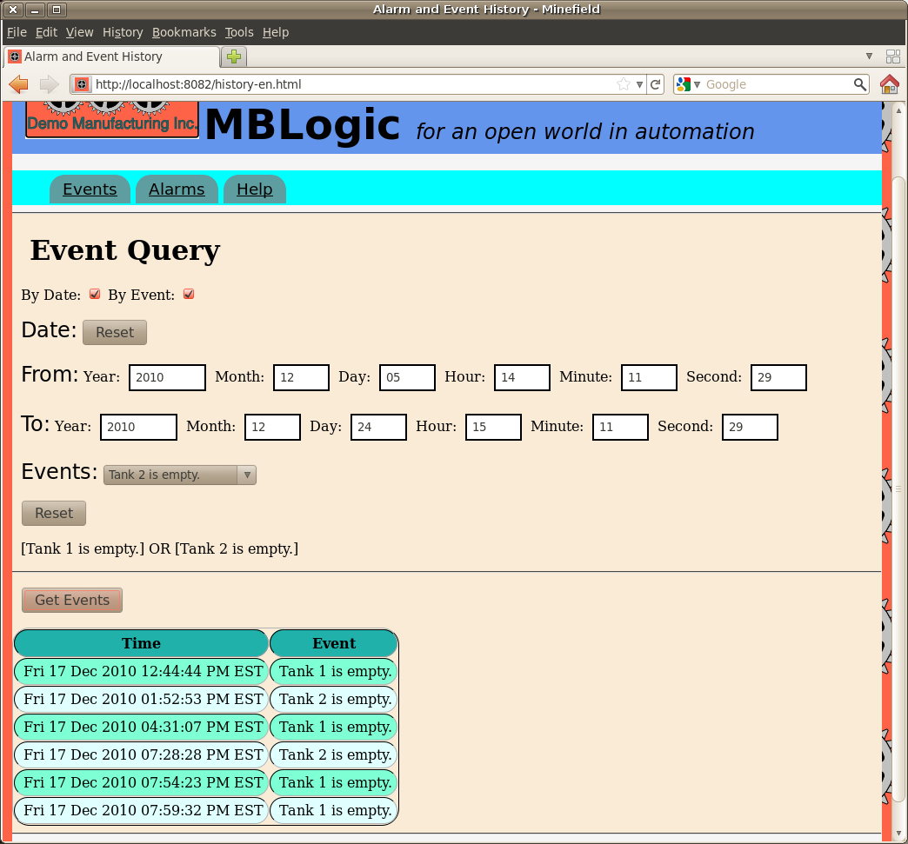

MBLogic
for an open world in automation
MBLogic
for an open world in automation
Help - Alarm and Event History
Overview
The alarm and event history database can be queried via the provided web based history query system. Most of the help information presented here is also in the alarm and event history page itself under the "help" tab.
Accessing the Alarm and Event History Page.
The alarm and event history page is part of the HMI system and is accessed via the same URL as the HMI web pages. This means the HMI server must be configured and running to access the history system. The history system can also operate via the read-only restricted HMI service.
The history web page will be listed as one of the "HMI Web Pages" on the "System Configure" web page in the status system. With the default configuration provided with the system, the history web page can be accessed directly via the following URL:
http://localhost:8082/history-en.html
You may need to change the IP number ("localhost" in this example) or port (8082 in this example) depending on how you have installed the system.
Event History
The event database can be queried for events by date, by event name, or by a combination of the two. Select the query method you wish to use by selecting the appropriate check box.

Querying Events by Date
To query events by date, enter the desired date range in the date form. The resulting query will fetch events which occured between (and including) those two dates. Pressing the "reset" button will reset the date range to the default values.
Querying Events by Event Name
To query events by event name, select the desire events from the drop down selection widget. Each time you select an event, it will be added to the query and you will see it listed below the selection widget. To clear the current selection, press the "reset" button.
When you select multiple events, the request is "OR"ed together. That is, the query match record which contain any of the events requested.
Querying by Both Date and Event Name
You can query by a combination of both date and event name by selecting both options at once. This will select records which are both within the requested date range and which contain the requested events.
Starting the Query
Once you have specified the search criteria, press the "Get Events" button. This will send the request to the system and display the results when they are returned. The results will be displayed in the table beneath the "Get Events" button. The results will show the date at which the event occured, and the name of the event.
Alarm History Query
The alarm history database can be queried for events by date, by alarm name, by count, or by a combination of any two or three these. Select the query method you wish to use by selecting the appropriate check box.

Querying Alarm History by Date
To query alarm history by date, enter the desired date range in the date form. The resulting query will fetch alarms which occured between (and including) those two dates. Pressing the "reset" button will reset the date range to the default values.
Querying Alarm History by Alarm Name
To query alarm history by alarm name, select the desire alarms from the drop down selection widget. Each time you select an alarm, it will be added to the query and you will see it listed below the selection widget. To clear the current selection, press the "reset" button.
When you select multiple alarms, the request is "OR"ed together. That is, the query match record which contain any of the alarms requested.
Querying Alarm History by Count
To query alarm history by count (the number of times the alarm occurred before being sent to the history), enter the desired count range in the count form. The resulting query will fetch alarms which occured between (and including) those two count ranges.
Querying by Multiple Criteria
You can query by any combination of date, alarm name, and count by selecting multiple options at once. This will select records which meet all the selected criteria. Criteria which are not selected will not factor in the search.
Starting the Query
Once you have specified the search criteria, press the "Get Alarms" button. This will send the request to the system and display the results when they are returned. The results will be displayed in the table beneath the "Get Alarms" button. The results will show the following:
- The date at which the alarm originally occurred.
- The date at which the alarm became "ok".
- The name of the alarm.
- The name of the client which acknowldged the alarm.
- The number of times the alarm occurred before being sent to history.
Alarm and Event Messages
The alarm and event history must be integrated with the HMI application in order to use the same alarm and event messages. These messages are read from a file. The default name for this file is messagetexts.js. The alarm texts are in an object called MBT_AlarmText. The event texts are in an object called MBT_EventText.
MBT_AlarmText = {
"PB1Alarm" : "PB1 was pressed.",
"PB2Alarm" : "PB2 was pressed.",
"PB3Alarm" : "PB3 was pressed.",
"PB4Alarm" : "PB4 was pressed."
};
MBT_EventText = {
"PumpRunning" : "Tank pump is running.",
"PumpStopped" : "Tank pump is stopped.",
"Tank1Empty" : "Tank 1 is empty.",
"Tank1Full" : "Tank 1 is full.",
"Tank2Empty" : "Tank 2 is empty.",
"Tank2Full" : "Tank 2 is full."
};
If your HMI application uses a different file to store the messages, or different object names, you will need to change the alarm and event history web page accordingly.
System Components
The alarm and event history system draws its data from the alarm and event database. Alarm and event logging is described elsewhere in this documentation and so is not covered in any more detail here.
The alarm and event history reporting system consists of the following components:
- history-en.html - This is a web application contained in a web page. This page can be renamed if desired.
- history.css - This is a text file which contains information about styles such as colours, fonts, text sizes, etc. This is a standard web page style sheet and information about it can be found in any reference about creating web pages.
- pagebackground.png - This is an image file which provides a page background.
- pageicon.png - This is an image file which provides a web page icon.
- pagelogo.png - This is an image file which provides a web page image.
- Messages - These are the actual message texts which convert the alarm and event "tags" to readable messages. See the above section on "Alarm and Event Messages" for more information.
- Javascript libraries - These are files containing Javascript code which run the alarm and event history web page application These are libhistory.js and libdata.js.
With the exception of the Javascript libraries, all history components must be located in the hmipages directory so they can be served by the HMI web server. The Javascript library files are located with the other standard HMI Javascript libraries in another directly within the system software.
Customising the Alarm and Event History
The alarm and event history page has various page decorations which can be changed to match the desired theme or appearance of the control application. They can be changed by editing the web page with a text editor. These consist of the following:
- Logo
- Page Icon
- Background
- Page Heading
Logo
The logo is an image found at the top left of the page. The default logo used is called pagelogo.png.
Icon
The page icon is a small image which is used by various web browsers in different ways. For example, with Firefox it appears in the page tab, as well as to the left of the URL bar, and also in the bookmarks. The default icon used is called pageicon.png.
Background Image
The background image appears around the edges and at the bottom of the web page. The default background image used is called pagebackground.png.
The logo, page icon, and background image are the same files as used with the HMI demo application. They can be changed to use different file names, different files with the same names can be substituted, or they can be removed altogether. The logo and icon file names are specified in the HTML file, while the page background is specified in the CSS file.
Page Heading
The page heading is a text message which appears at the top of the page to the right of the logo. This is located in the HTML file and can be changed to suit the application.
CSS Styles
In addition to these, the CSS file can be modified to change the colours, fonts, and other features. The HTML file itself can be changed as desired.